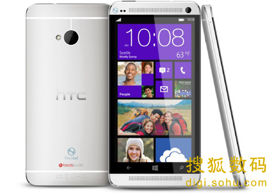

传HTC计划推出WP8版One 或为四核1080p市场

6月23日消息，根据国外媒体报道，HTC目前正在制作一款和HTC One非常相似的WP8手机，但并不会是简单的换换系统，两款手机的外型并不会一模一样。
报道称，这款设备的屏幕大小在4-5英寸之间，外壳材质主要为金属，拥有Beats Audio技术，可能会在今年秋天发布。
此外，消息称这款手机将会预装Windows Phone GDR3升级，它将带来对于1080p分辨率和四核处理器的支持。这款手机也可能会加入最新的Ultrapixel摄像头，但这个消息并没有得到确认。